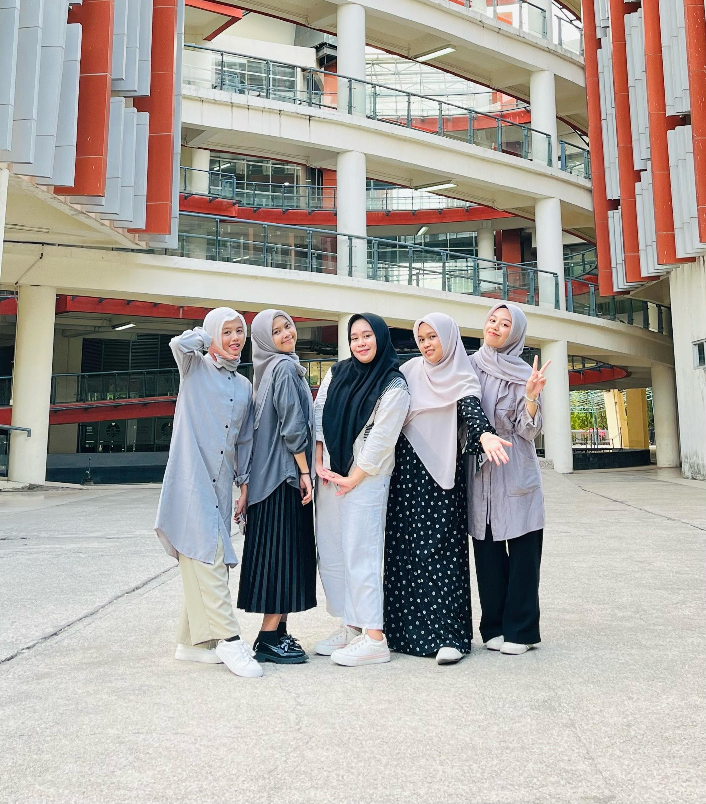
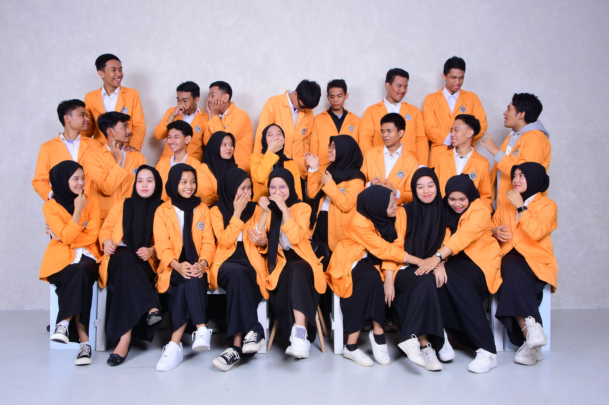
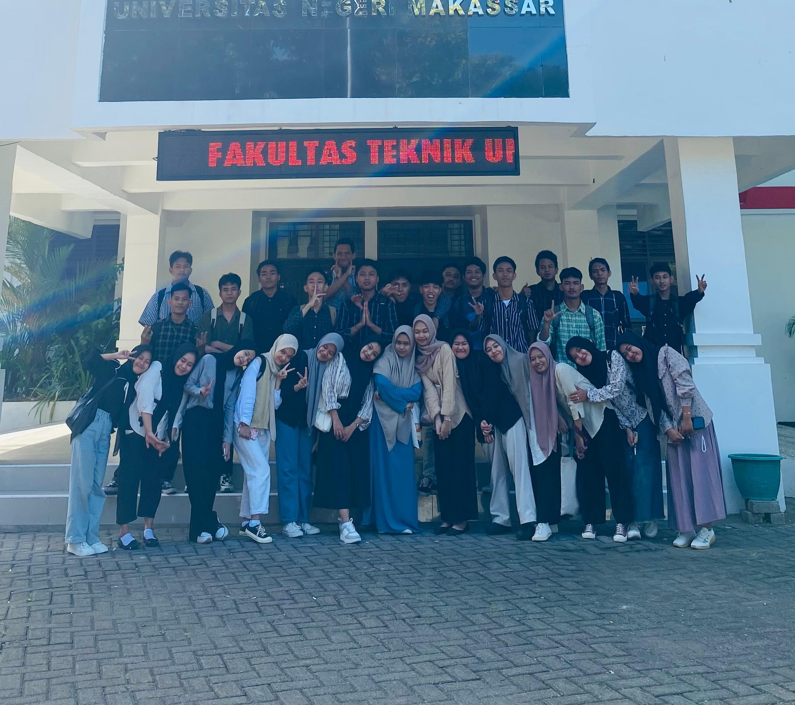
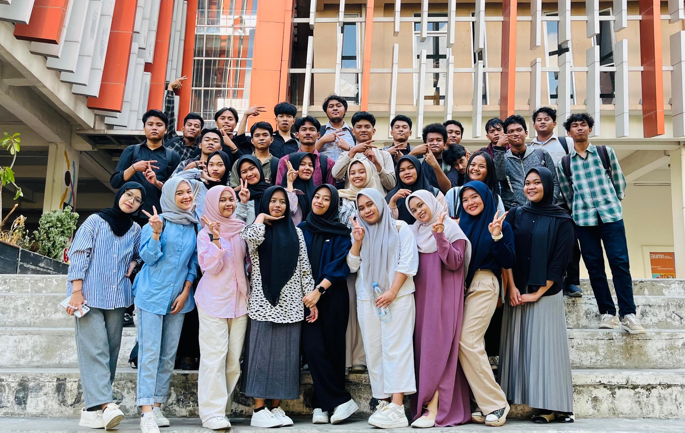
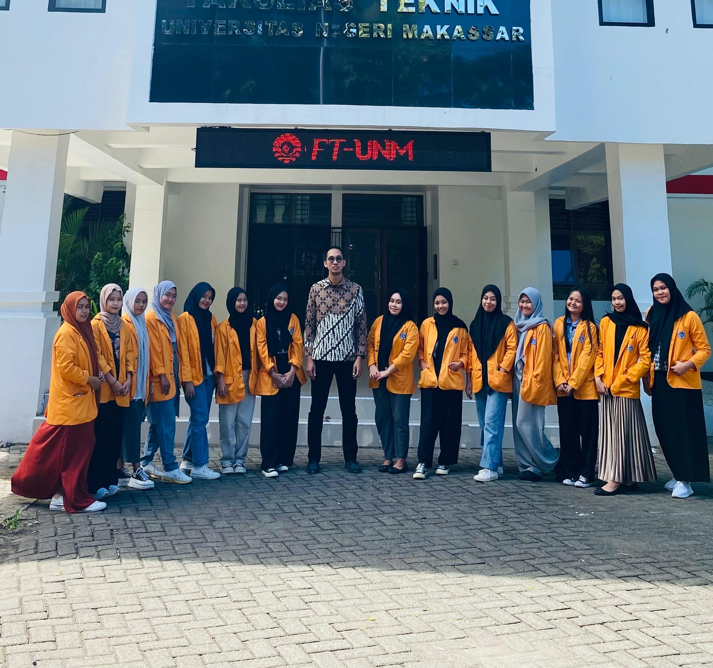
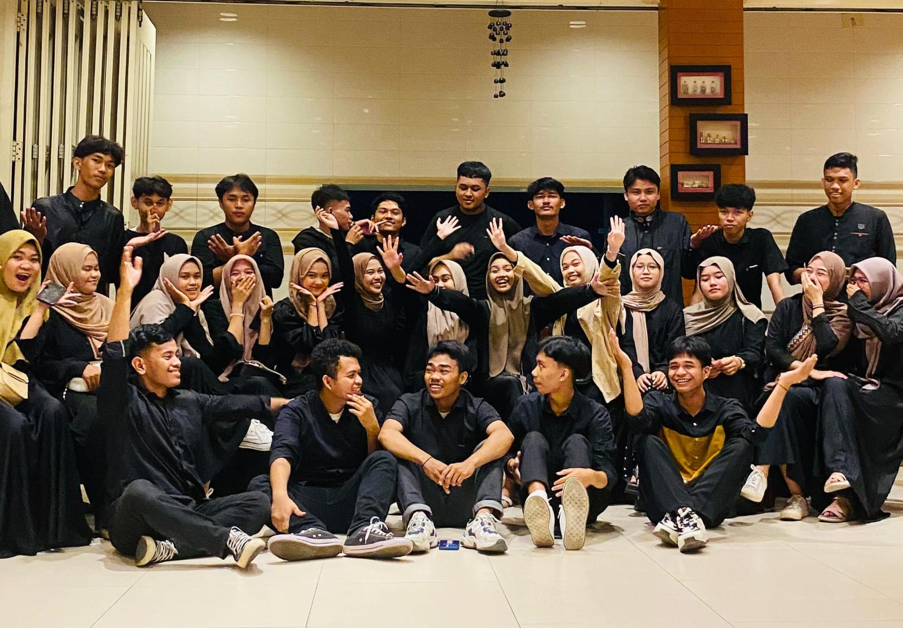
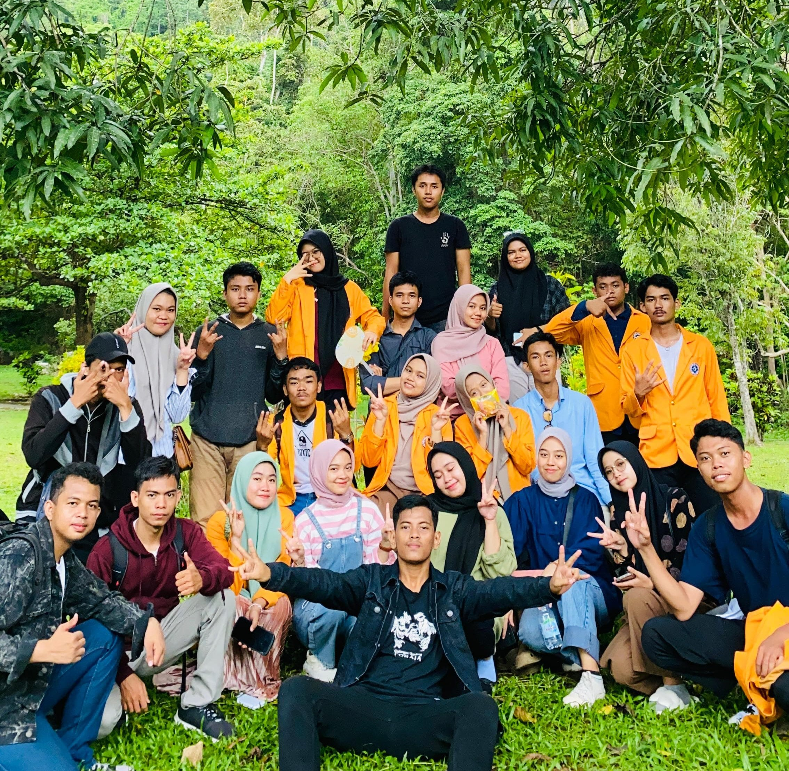
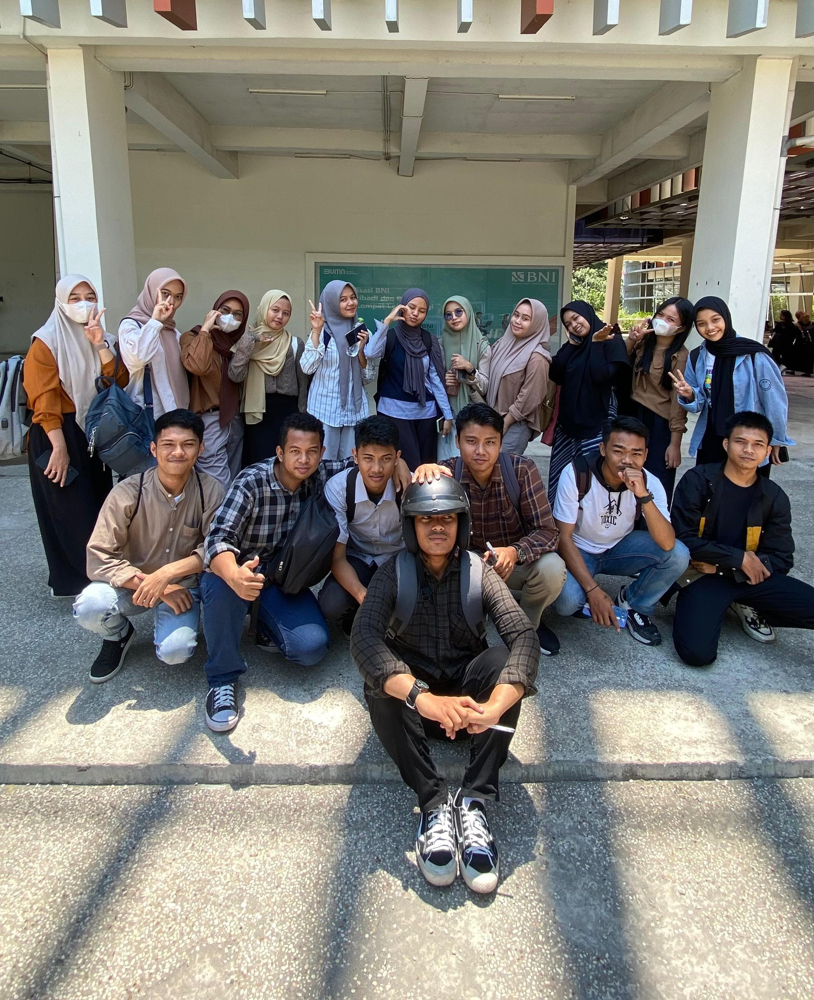

Nama : Siti Shafina Arfani
Universitas Negeri Makassar
Kebaikan yang kita berikan adalah
investasi terbaik
Pengalaman Perkuliahan di PTIK
Mengikuti kuliah di jurusan Teknik Informatika dan Komputer adalah pengalaman yang sangat berarti bagi saya. Sebagai mahasiswa baru, saya merasa semangat tetapi juga sedikit cemas saat pertama kali masuk kuliah. Setiap mata kuliah memberikan tantangan dan pengalaman baru yang membantu saya belajar lebih banyak dan meningkatkan keterampilan saya.
Selain itu, suasana belajar di jurusan ini juga sangat menyenangkan karena interaktif dan bisa bekerja sama dengan teman-teman. Dosen-dosennya juga sangat ahli di bidangnya masing-masing. Mereka tidak hanya mengajar materi, tapi juga mendorong kami untuk berpikir kritis, memecahkan masalah, dan membuat proyek-proyek. Memang terkadang ada tugas yang sulit atau ujian yang bikin pusing. Tetapi, semua itu bagian dari proses belajar yang penting, secara keseluruhan, pengalaman kuliah di jurusan Teknik Informatika dan Komputer sangat berharga dan memotivasi saya untuk terus belajar dan berkembang. Saya yakin ilmu dan kemampuan yang saya dapat di sini akan sangat berguna untuk persiapan bekerja nanti dan menjadi profesional di bidang teknologi informasi.
Daftar Mata Kuliah yang telah dipelajari :
Daftar Mata Kuliah yang telah dipelajari :
- Organisasi dan Arsitektur Komputer
- Algoritma dan Pemrograman Dasar
- Komputer Grafis
- Elektronika Analog dan Digital
- Pemrograman Web
- Keamanan Komputer
Daftar Dosen :
Daftar Dosen :
- Alifya Nfh,S.Pd., M.Pd.
- Dr. Sanatang, S.Pd., M.T.
- Dwi Rezky Anandari Sulaiman, S.Psi., M.Si.
- Prof. Dr. Ir. Iriana Tangkin Mangesa, M.T.
FOTO-FOTO KEGIATAN
      | No. | Nama |
Jenis Kelamin | Alamat |
Asal Sekolah |
|
|---|---|---|---|---|---|
| Lengkap | Panggilan | ||||
| 1 | Sri Rejeki Yunus | Sri | Perempuan | Jl. Manggarupi No.103 | SMAN 10 GOWA |
| 2 | Uswatun Hasanah | Uswa | Perempuan | Tidung Mariolo Lorong 2 | Pondok Pesantren Ahlul Qur'an |
| 3 | Alwis Andini Sy | Dini | Perempuan | Jl. Dahlia, Batangkaluku | SMAN 14 GOWA Sekolah |
| 4 | Adinda Zachrani Cantika | Dinda | Perempuan | Jl. Pelita Taeng, B/01 | SMKN 2 GOWA |